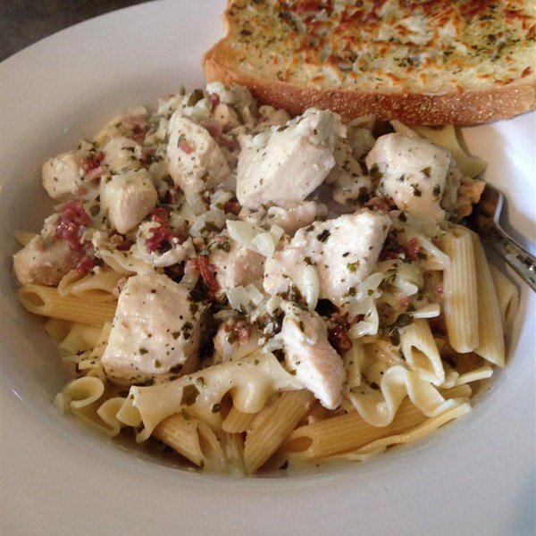

- 16 Ounce Package Penne Pasta
- 2 Tablespoons Butter
- 2 Tablespoons Olive Oil
- 4 Skinless, Boneless Chicken Breast Halves
- - Cut Into Thin Strips
- 2 Cloves Garlic, Minced
- Salt and Pepper to Taste
- 1 1/4 Cups Heavy Cream
- 1/4 Cup Pesto
- 3 Tablespoons Grated Parmesan Cheese
- Bring a large pot of lightly salted water to a boil.
- Add Pasta and cook for 8 to 10 minutes or until aldente; drain.
- Heat butter and olive oil in a large skillet over medium heat.
- Saute chicken an garlic until chicken is almost cooked.
- Reduce heat and stir in salt, pepper, cream, pesto and Parmesan cheese.
- Cook until chicken is no longer pink inside.
- Stir in cooked pasta.